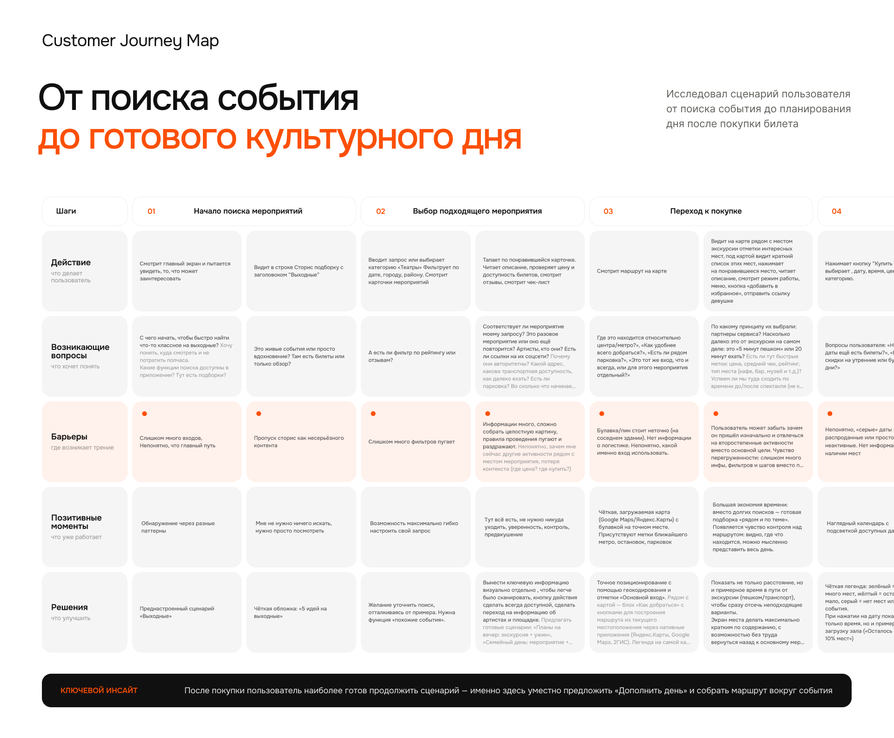
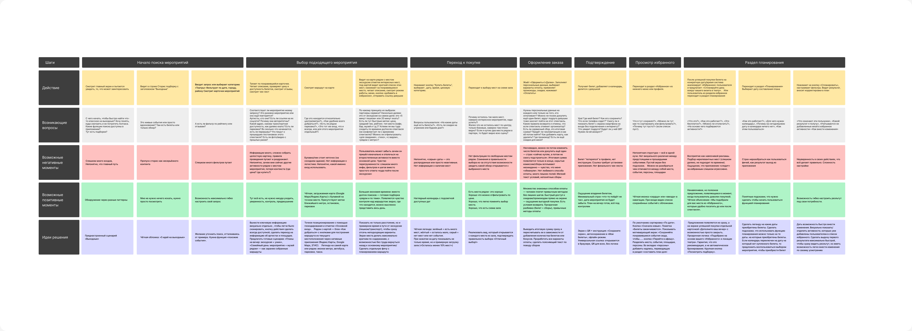

Персона
Владислав, 25+, менеджер в IT
Средняя платёжеспособность, есть девушка. Ходит на мероприятия 1–2 раза в месяц — театр или концерты.
Мотивация: интересно провести выходные с девушкой.
Что не нравится: нет индивидуальных подборок; чтобы спланировать выходной, приходится открывать несколько сайтов — это отнимает много времени.
Ожидание: в одном месте не только купить билеты, но и организовать весь вечер.
Jobs to be done
Когда
я понимаю, что давно никуда не ходил или моя девушка хочет куда-нибудь сходить на выходные
Я хочу
найти интересное мероприятие, не тратить много времени на поиск и купить билеты без лишних шагов
Чтобы
интересно провести выходные со своей девушкой
Как задача решается сейчас: Афиша → Карты → Кафе → Мессенджер. Четыре продукта на одну задачу.
Customer Journey Map
Сценарий пользователя от поиска события до планирования дня после покупки: 7 этапов, по каждому — действия, вопросы, барьеры, позитивные моменты и идеи решения.

Полная карта: 7 этапов × 5 слоёв (действие, вопросы, барьеры, позитив, решения)

| Этап | Барьер | Решение |
|---|---|---|
| 01 Начало поиска | Слишком много входов, непонятно, где главный путь. Сторис воспринимаются как несерьёзный контент | Преднастроенный сценарий «Выходные», понятная обложка «5 идей на выходные» |
| 02 Выбор мероприятия | Много фильтров и информации, сложно собрать картину. Пин на карте неточный, нет логистики. Пользователь отвлекается на второстепенные места и теряет цель | Ключевая информация и кнопка покупки всегда на виду. Блок «Как добраться» с метро и парковками. Время в пути до мест рядом, быстрый возврат к событию |
| 03 Переход к покупке | «Серые» даты непонятны. Нет фильтра по свободным местам рядом, не видно, какой обзор с места | Легенда загрузки дат («осталось менее 10% мест»), вид на сцену с выбранного места |
| 04 Оформление заказа | Итоговая сумма появляется только в конце, скрытые сборы — ощущение «обманули». Много лишних полей | Итоговая сумма сразу и с пересчётом, пояснение по сборам, привычные способы оплаты |
| 05 Подтверждение | Билет «теряется» в профиле, нет финального чек-листа | Экран с QR и инструкцией, автосохранение в «Мои билеты», офлайн-режим |
| 06 Избранное | Всё в одной куче, пустой экран без подсказок, непонятна разница между местами, событиями и персонами | Сортировка по дате, разделение по типам, мотивирующий пустой экран со ссылкой на планирование |
| 07 Планирование | Предложение выглядит как навязчивая реклама. Страх не разобраться, сложная настройка | Карточка «Дополните ваш вечер» на экране успешной покупки, прозрачная логика подбора, быстрый первый результат с возможностью правок |
Ключевой инсайт. После покупки пользователь наиболее готов продолжить сценарий — именно здесь уместно предложить «Дополнить день» и собрать маршрут вокруг события.